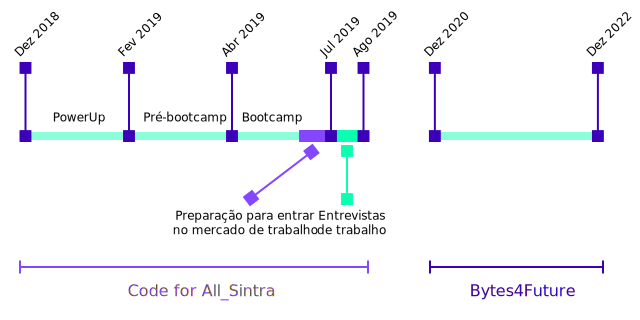

O Projeto BYTES4FUTURE
História do Projeto
O projeto começou em dezembro de 2018 com o projeto piloto Code for All Sintra, na área técnica de programação, com o objetivo de aproximar jovens NEET do concelho de Sintra ao universo digital e ao mercado de trabalho.
Em Portugal há uma grande procura de recursos humanos qualificados na área de programação e recentemente tem vindo a surgir a oportunidade de entrar no mercado da programação através da participação e conclusão de bootcamps.
Durante o projeto, foram recebidos 20 jovens NEET, dos 18 aos 29 anos, para desenvolverem o inglês, as suas soft skills e participarem em bootcamps de programação, tanto a nível de iniciação como a nível intensivo. O programa garantiu uma preparação profissional completa, do qual 80% dos jovens foram bem-sucedidos na entrada do mercado de trabalho.
Em 2021 continuamos o projeto, iniciando o Bytes4Future, para todos os jovens que queiram UPSkill na área tecnológica!
